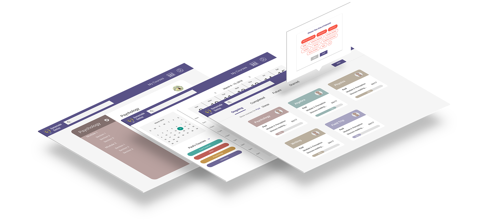
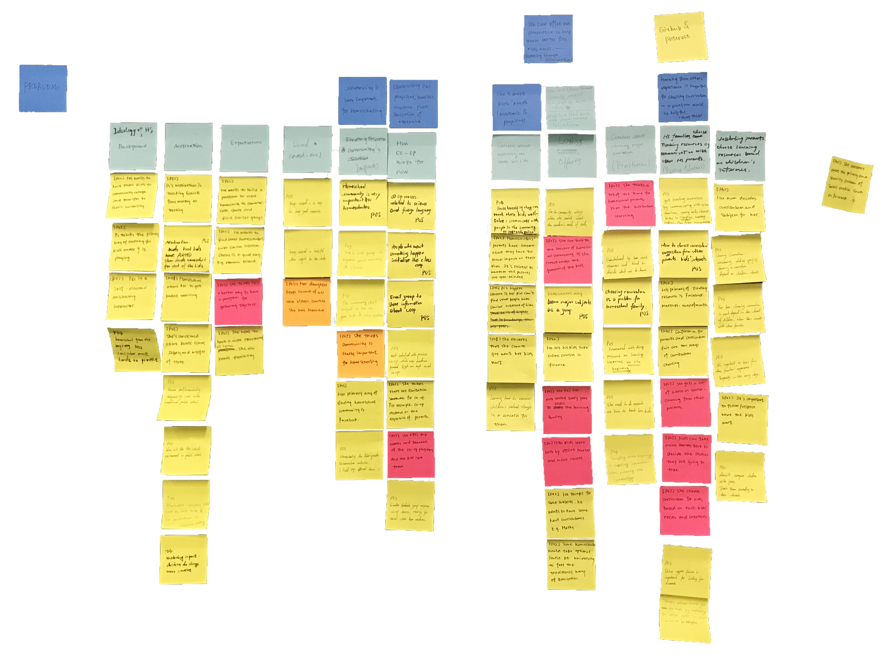
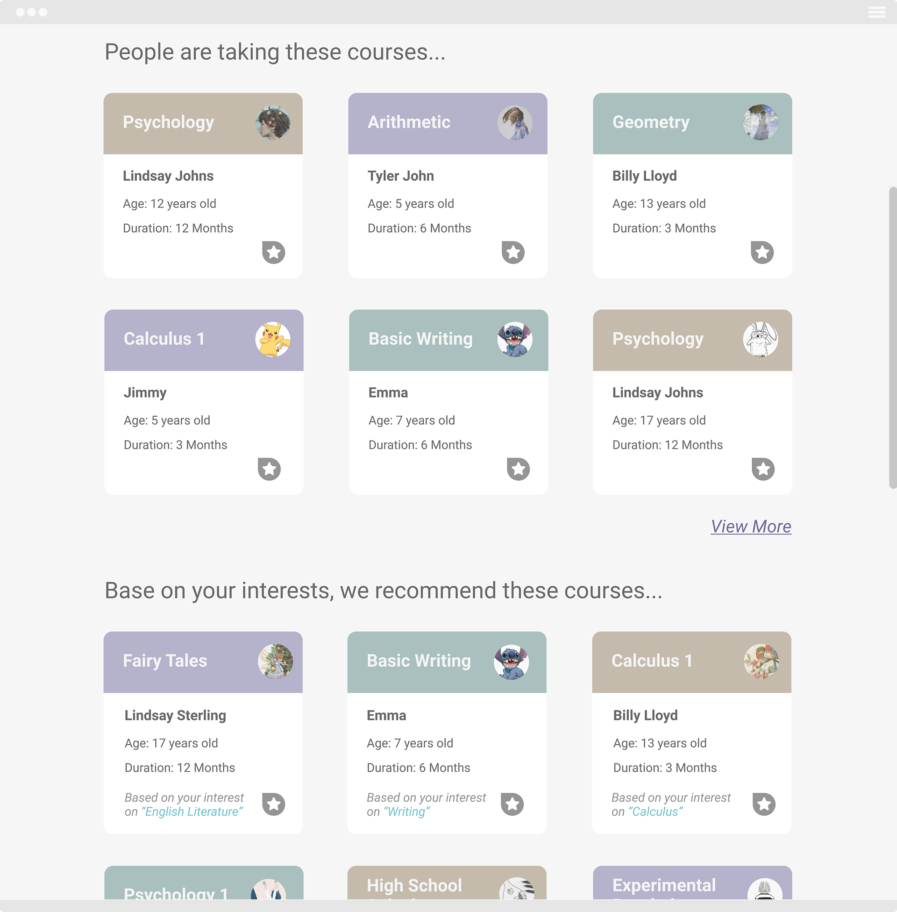

Homemade Genius
Improving Homeschool Learning Experience
Homemade Genius is a web app that aims to provide a better homeschooling experience. It helps homeschoolers easily find learning resources that best fit, plan and share their own courses with others in the community, and keep a detailed record of the learning processes.
TOOLS
Sketch, Figma, RawShorts,
Illustrator, Photoshop
DURATION
Oct 2017 - Ongoing
Identifying the Problem
- Socializing skills for homeschool kids
- Education quality and efficiency
- Safety concerns
Meeting Some Homeschool Parents
In our interviews with homeschool parents and former homeschool kids, we asked questions regarding their motivations for choosing homeschool education, approaches for finding homeschool learning resources, communications between homeschool parents and their kids, and any frustrations and concerns throughout their homeschooling experience. Questions are phrased open-ended and non-judgmental, but for the purpose of getting concret response.
Meet some homeschool parents we've talked to and see what they say:

Understanding Pain Points
After completing each interview, our team went over key findings that were revealed during interviews as a group, using notes and recordings as points of discussion. Individual pieces of data, those that captured single facts about homeschooling education, were recorded as discrete affinity notes and then incorporated into an integrated affinity wall.
{kind=link}
[Click for larger view]
- Community plays an important role for homeschool families, in which homeschool parents can share resources and suggestions with each other. But the community is often too small that puts many constraints.
- Finding learning resources is problematic for some homeschoolers for that it is often time-consuming to locate the right fits.
- The current way for homeschoolers to find kids that share similar interests is through Facebook posting or in-person communications in the local homeschool community, which could be constrained by the geographical boundary and is not particularly efficient.
Designing a Solution
After our interviews with homeschoolers and subsequent analysis, we brainstormed potential solutions together and proposed Homemade Genius, an integrated online homeschooling community for finding learning resources that best fit, planning and sharing courses, keeping detailed learning record, and connecting with people with similar interests, etc.

[Click for larger view]
Bringing our ideas to some homeschoolers and information professionals, we received many positive feedback on the general concepts as well as constructive suggestions for what the system enables. Specifically,
- privacy is a top concern for homeschool parents. Designing a system that carefully protect privacy of the kids could be essential,
- besides hoping to find more learning resources, homeschool parents also expressed expectations to see ratings from past resource users as critical reference, and
- the system should not only function as an information hub, but also allow users to actively interact with each other.
With these feedback and suggestions, here's a glimpse of what you can do with Homemade Genius:
Recommend courses and users based on your profile and area of interests.
Find, share and manage learning resources.
Create personalized curriculum.
Find kids who share similar interests through keywords searching, online chatting, and course discussion.
Find people who are taking the same course or have recently taken the course.
Check out the video for an interactive hi-fi prototype.
This project was first initiated as a part of the 2018 ACM CHI Conference on Human Factors in Computing Systems, featuring the theme of engage. We really hope Homemade Genius can help homeschoolers best leverage the benefit of an active online community, eventually creating a home learning environment where information can be easily managed, tracked, and shared.
We are still actively testing our designs and getting feeback from target users and experts. Please reach out to us (chi-the22@umich.edu) if you are interested in learning more about the project or helping us with back-end implementation!